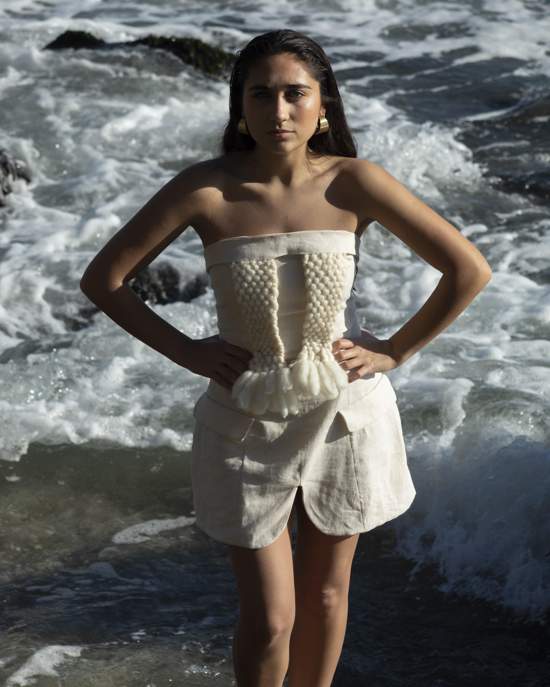
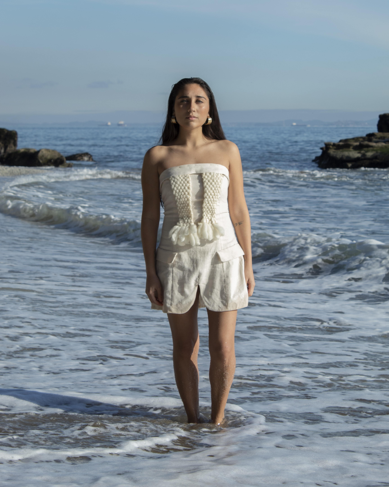

SASTRO
MARZO - JULIO 2024
Marca Taller de Diseño Autor
"En el corazón de una ciudad costera, donde las olas susurran secretos ancestrales y la artesanía tradicional se funde con la modernidad, nace nuestra marca. Se fusiona la elegancia atemporal con la serenidad y frescura del estilo costero, reflejando la artesanía tradicional y la sostenibilidad en cada pieza. Colores nude y toques de dualidad se entrelazan, celebrando la belleza de lo auténtico. Una oda a la vida junto al mar, donde la calidad, el amor por los detalles y la conexión con nuestras raíces se encuentran. Nuestro propósito es inspirar paz y confianza a través de cada pieza, invitándote a sumergirte en la sensación de ser una mujer segura y única."





AUTENTICIDAD - RECONEXIÓN - EMPODERAMIENTO FEMENINO - SOSTENIBILIDAD - EQUILIBRIO